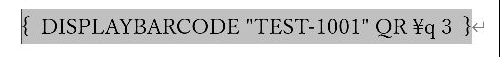
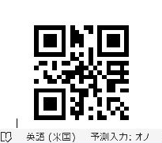

Word差し込み印刷でQRコードを差し込む方法：MERGEBARCODEでExcelの値をQR化
Excelの値を、人ごとのQRコードにして文書やラベルへ入れます。フィールドコードを使う応用編です。必ず印刷後に実機で読み取ります。
Excelの列からQRを作るなら MERGEBARCODE、固定の文字列なら DISPLAYBARCODE を使います。まず短い半角IDで試し、印刷後に実機で読み取ります。
難しい・応用（Lv.5）
- 短いIDで準備
- コードを挿入
- 全員分を出力
- 実機で読み取り
目次
この記事でできること
Excelの管理表にあるURL、受付番号、商品ID、Webシステム入力用の文字列などを、Wordの差し込み印刷で1件ずつQRコードにします。
まず2件で試す（応用編）
難易度高（Lv.5）。ここではフィールドコードを使います。通常の宛名や案内文は、先にレター・ラベルの基本手順で作ってください。
- Excelに「QR用文字列」列を作り、最初は半角IDの「TEST-1001」「TEST-1002」など2件で試します。
- Wordでレターの差し込みを開始し、Excelファイルとシートを接続します。宛名やラベルの文書でも同じです。
- 氏名やIDを通常のフィールドとして挿入し、QRの横に人が読める文字も残します。
- QRを置く位置でCtrl＋F9を押し、Wordが作ったかっこの内側へ
MERGEBARCODE QR用文字列 QR \q 3と半角で入力します。かっこを二重に入力しません。 - F9で更新し、必要に応じAlt＋F9で結果表示に戻して「結果のプレビュー」をオンにします。
- 次の人へ切り替えます。
確認氏名・ID・QRが一緒に切り替われば成功です。
- 「個々のドキュメントの編集」→「すべて」で完成文書を出します。
- 印刷した2件のQRを、実際のQRリーダーやスマホで読みます。
確認TEST-1001とTEST-1002がそれぞれ一致することを確認します。

差し込みQRコード：MERGEBARCODE
Excelの列ごとに違うQRコードを作るときに使います。たとえば QR用文字列 という列がある場合です。
これで、差し込み印刷の各レコードごとに、QR用文字列 の値からQRコードを生成します。
| 宛先ID | 氏名 | QR用文字列 |
|---|---|---|
| 1001 | 山田 太郎 | https://example.com/check?id=1001 |
| 1002 | 佐藤 花子 | https://example.com/check?id=1002 |
固定のQRコード：DISPLAYBARCODE
固定のURLや固定文字列をQRコードにするだけなら、こちらを使います。
QR がQRコードの種類、\q 3 がエラー訂正レベルです。フィールドの { } は Ctrl＋F9 で作ります。


人ごとに切り替わるMERGEBARCODEの結果
全角文字は避ける
日本語の氏名や住所などの全角文字をそのまま入れる設計は避けた方が安全です。半角英数字、URL、ID、区切り記号を中心にします。
| 入れるもの | おすすめ度 | 理由 |
|---|---|---|
| URL | 高 | 読み取り後にWeb画面へ飛ばせます。 |
| 受付番号・伝票番号 | 高 | 半角英数字で安定しやすいです。 |
| 複数項目を区切った半角文字列 | 中 | 例：ID=1001&TYPE=A のように設計できます。 |
| 日本語の住所・氏名 | 低 | 全角文字は避け、IDから参照する設計にした方が安全です。 |
サイズと読み取りの注意点
| スイッチ | 意味 |
|---|---|
\s | 大きさの倍率。単位は%で、10〜1000を指定します。 |
\q | QRコードのエラー訂正レベル。0〜3を指定します。 |
\h | 高さ。単位はTWIPS（1/1440インチ）です。 |
大きくしたいときは { MERGEBARCODE QR用文字列 QR \q 3 \s 150 } のように指定します。実際に差し込むと、\s 100 は約82pt、\s 150 は約124pt、\s 200 は165pt四方になりました（住所録の短い値の場合）。
- 長い文字列ほどQRが細かくなる：印刷サイズが小さいと読み取りにくくなります。
- 余白を潰しすぎない：QRコードの周囲に余白がないと読み取り精度が落ちます。
- レーザープリンターと実機で確認する：画面で見えても、印刷すると読めないことがあります。
- 全角文字は慎重に扱う：日本語住所を入れるより、IDやURLにして読み取り後に参照する設計が安定します。使う場合は、必ず印刷後の読み取り結果まで確認します。
読み取れないときの確認順
- コードのかっこがCtrl＋F9で作ったものか、列名がExcelの見出しと一致するかを確認します。
- 長いURLや日本語を使う前に、短い半角IDで生成できるかを確認します。
- QRの周囲の白い余白を残し、小さく印刷しすぎないようにします。
- 使うプリンター・用紙・読み取り機で、最初と最後のデータも読み取ります。
- 画面にQRが出たことと、正しい値として読めることは別々に確認します。
Microsoft：MergeBarcodeフィールド（英語）、DisplayBarcodeフィールド（英語）。構文とスイッチの説明です。
ExcelでQRを作る方法との使い分け
差し込みデータからWord内でQRを生成でき、レコードごとの画像ファイルを別に用意せずに済みます。別方式との文字数制限の比較は、利用する方式・版・文字種ごとに確認してください。
| 方法 | 向いている場面 | 注意点 |
|---|---|---|
| ExcelでQR画像を作る | Excel内で一覧印刷したい、画像として保存したい場合。 | 方式によっては文字数制限や外部サービス依存があります。 |
| WordのMERGEBARCODE | 宛名、ラベル、案内文に差し込みでQRを入れたい場合。 | Word for Windows環境での事前検証が必要です。全角文字は避けます。 |
| 専用QR作成ツール | 大量生成、画像保存、デザイン調整が必要な場合。 | 別ツール運用になるため、テンプレート管理が増えます。 |
まとめ
MERGEBARCODEを使うと、Excelの値を差し込み印刷しながらQRコード化できます。Excel側でQR画像を作らなくてよいので、宛名ラベル、受付票、案内文、封筒などと相性がよい方法です。文字数だけで方式を選ばず、半角英数字・URL・ID中心で設計します。全角文字を使う場合は、表示だけで判断せず、印刷後に読み取れるか、出力文字列が崩れていないかを確認してから使用してください。
実機で確認した内容
- 確認日：2026-11-03
- 環境：Windows版 Word / Excel 16.0
- 確認した範囲：4人で別々のQRができる。生成画像を解読すると、1人目は100-0001、2人目は530-0001で名簿と一致する。
\sで大きさが変わる。 - 確認していないこと：紙への印刷、読み取り機・スマートフォンでの読み取り、
\qの値と訂正レベルの対応。環境により結果が異なる場合があります。
更新履歴
- 2026-11-03：大きさとエラー訂正のスイッチを追加。使い分けの節を統合。